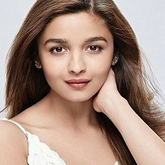
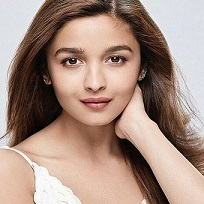

Hi! My name is Aaniya Patel. I am 11 years old. My favourite Hobby is swimming and I love swimming because it's relax our whole body when we swim and swimming is also a good excersice. I also do swimming clase to proper my swimming and also because I love swimming. In swimming until now I have learned floating, diving and under water swimming.
Thank you.
Aaniya-

Hi! My favourite Character is Makela Mclister from series Project Mc2. She is the main character in the series. Project Mc2 is a spy movie in this Movie Makela Mclister, Camryn Coyle, Adrienne Attoms and Bryden Bandweth are the spies.
Thank you
Aaniya Patel...
 
